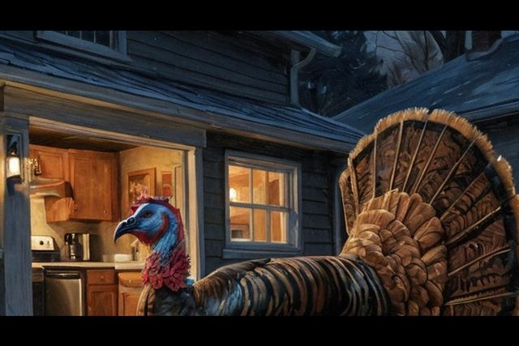

Chapter One · Skills 01–07The Turkey Has Escaped
An empty roasting pan, a broken crate and a long day ahead
- Noticing the Turkey Is Gone
- Following the Turkey’s Tracks
- Coaxing a Turkey Down from the Elm
- Cornering a Turkey in the Garage
- Negotiating with a Turkey
- Building a Decoy Turkey for the Table
- Keeping a Turkey Out of the Kitchen